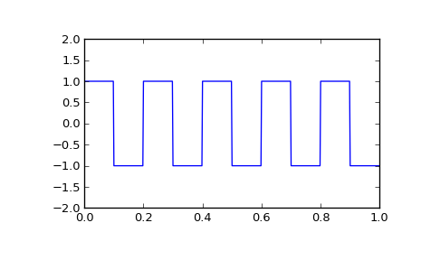
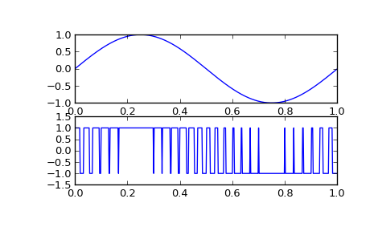

scipy.signal.square¶
- scipy.signal.square(t, duty=0.5)[source]¶
Return a periodic square-wave waveform.
The square wave has a period 2*pi, has value +1 from 0 to 2*pi*duty and -1 from 2*pi*duty to 2*pi. duty must be in the interval [0,1].
Note that this is not band-limited. It produces an infinite number of harmonics, which are aliased back and forth across the frequency spectrum.
Parameters : t : array_like
The input time array.
duty : array_like, optional
Duty cycle. Default is 0.5 (50% duty cycle). If an array, causes wave shape to change over time, and must be the same length as t.
Returns : y : ndarray
Output array containing the square waveform.
Examples
A 5 Hz waveform sampled at 500 Hz for 1 second:
>>> from scipy import signal >>> import matplotlib.pyplot as plt >>> t = np.linspace(0, 1, 500, endpoint=False) >>> plt.plot(t, signal.square(2 * np.pi * 5 * t)) >>> plt.ylim(-2, 2)
A pulse-width modulated sine wave:
>>> plt.figure() >>> sig = np.sin(2 * np.pi * t) >>> pwm = signal.square(2 * np.pi * 30 * t, duty=(sig + 1)/2) >>> plt.subplot(2, 1, 1) >>> plt.plot(t, sig) >>> plt.subplot(2, 1, 2) >>> plt.plot(t, pwm) >>> plt.ylim(-1.5, 1.5)
